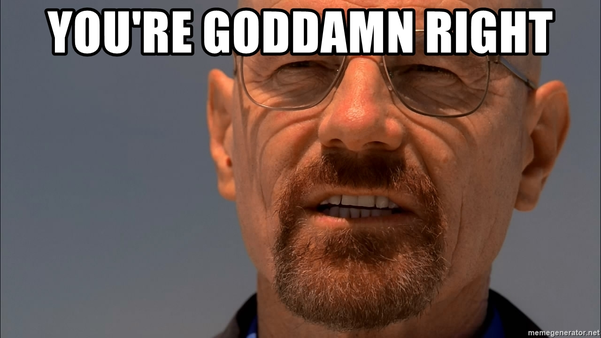
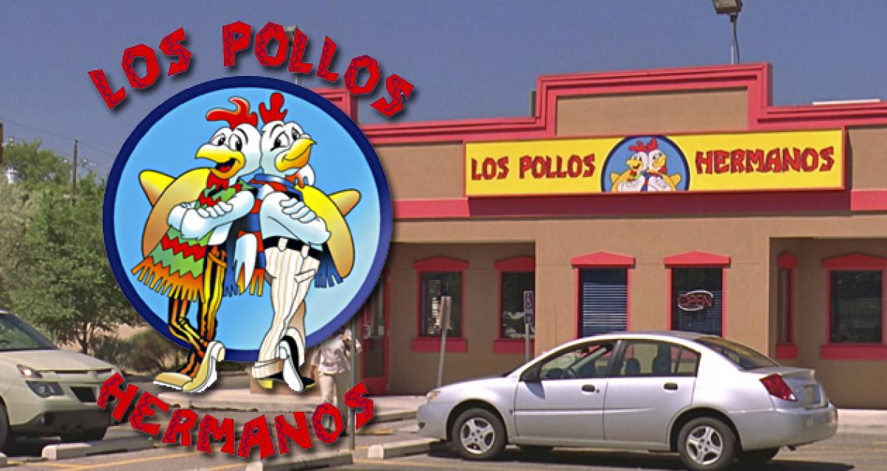
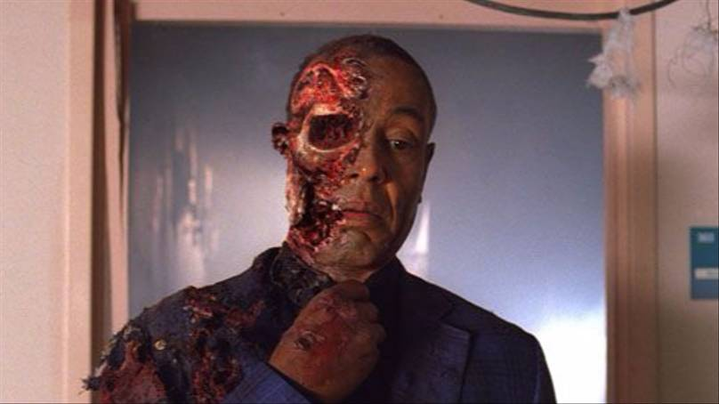

1. Das Wasser in einen Krug geben und die in Spalten geschnittenen Zitronen
auf 2 Fruchtspieße stecken und in das Wasser geben.
2. Die Zitronenmelissenblätter waschen und ebenfalls hinzugeben.
Zum Schluss noch die Eiswürfel in den Krug geben.
1 liter Wasser
2 Stück Zitronen
20 Blätter Zitronenmelisse
5 Stück Eiswürfel
50 g Ingwer für Ingwer liebhaber !
3 Esslöffel Ahornsirup für Ahorn liebhaber
6 Schbeiben Salatgurke für ein leichter Gurkenaroma
Statt Wasser könnte man auch Mineralwasser nehmen.The Ninja.PDF
Here is a Quote of Walter White Bitch

Declan: "Who the hell are you?"
Walter: "You know. You all know exactly who I am. Say my name."
Declan: "Do what? I don't–I don't have a damn clue who the hell you are."
Walter: "Yeah, you do. I’m the cook. I’m the man who killed Gus Fring."
Declan: "Bullshit. The cartel got Fring."
Walter: "Are you sure? That’s right. Now say my name."
Declan: "Heisenberg."
Walter: "You’re goddamn right."


Dont do drugs kids its bad okayVI VI MADAME LE BAGUETTE OMELETTE DU FROMAGE

| Actor | Firstname | Status |
|---|---|---|
| Main | Walter | Dead |
| Main | Jesse | Alive |
| Side | Hank | Dead |
in LMTH - SSC

CURRENT WEATHER IN YOUR LOCATION